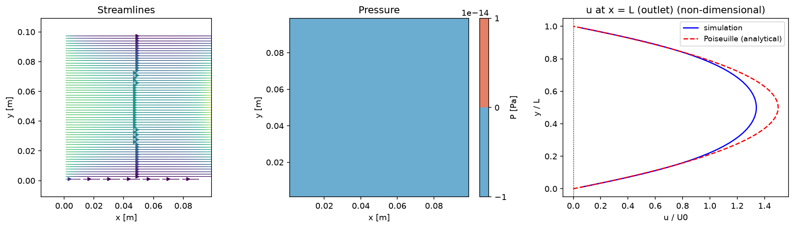

3. 粘性項
このステップで書くのはwrk/diffusion.f90の粘性項だけ。手順は移流項と
まったく同じ（項を取り出す → 時間を離散化 → 空間を離散化 → コードにする）。圧力Poisson（poisson.f90）はまだ空欄のままでよい。
支配方程式
非圧縮のNavier-Stokes方程式のうち、このステップで実装するのは粘性項（下線部）:
$$ \frac{\partial \mathbf{u}}{\partial t} + (\mathbf{u}\cdot\nabla)\mathbf{u} = -\frac{1}{\rho}\nabla p + \underbrace{\nu\nabla^2\mathbf{u}}_{\text{粘性項}} \tag{1} $$
Step 1: 粘性項だけを取り出す
運動量式から時間変化項と粘性項だけを残す。成分ごとに書くと:
$$ \frac{\partial u}{\partial t} = \nu\left(\frac{\partial^2 u}{\partial x^2}+\frac{\partial^2 u}{\partial y^2}\right) \tag{2} $$
$$ \frac{\partial v}{\partial t} = \nu\left(\frac{\partial^2 v}{\partial x^2}+\frac{\partial^2 v}{\partial y^2}\right) \tag{3} $$
右辺はνと速度のラプラシアン（2階微分の和）の積。
移流項と違って、uの式にはuしか出てこない（vの平均は要らない）。
Step 2: 時間の離散化（前進Euler）
分数ステップ法では、前の項の結果に積み上げていく。出発点は移流で進めた仮流速 $u^{\mathrm{adv}},\ v^{\mathrm{adv}}$、
粘性まで進めた結果を $u^{\mathrm{diff}},\ v^{\mathrm{diff}}$ と書く。
前進Eulerで時間微分を前進差分にし、
右辺のラプラシアンは前ステップの値 $u^{n},\ v^{n}$（コードの un, vn）で
陽的に評価すると:
$$ \frac{u^{\mathrm{diff}} - u^{\mathrm{adv}}}{\Delta t} = \nu\left(\frac{\partial^2 u^{n}}{\partial x^2}+\frac{\partial^2 u^{n}}{\partial y^2}\right) \tag{4} $$
$u^{\mathrm{diff}}$ について解けば更新式。y成分も同じ手順で:
$$ u^{\mathrm{diff}} = u^{\mathrm{adv}} + \Delta t\,\nu\left(\frac{\partial^2 u^{n}}{\partial x^2}+\frac{\partial^2 u^{n}}{\partial y^2}\right) \tag{5} $$
$$ v^{\mathrm{diff}} = v^{\mathrm{adv}} + \Delta t\,\nu\left(\frac{\partial^2 v^{n}}{\partial x^2}+\frac{\partial^2 v^{n}}{\partial y^2}\right) \tag{6} $$
コードでは $u^{\mathrm{adv}}$ も $u^{\mathrm{diff}}$ も同じ配列 u（移流ステップの結果が入っている u(i,j) に、粘性の分を足して上書きする）。
Step 3: 空間の離散化（i+1/2ずらし格子）
2階微分は、隣り合う3点を使った2次精度中心差分にする。uの点（$u_{i+1/2,\,j}$）の上で:
$$ \left.\frac{\partial^2 u^{n}}{\partial x^2}\right|_{i+1/2,\,j} \approx \frac{u^{n}_{i+3/2,\,j}-2u^{n}_{i+1/2,\,j}+u^{n}_{i-1/2,\,j}}{\Delta x^2} \tag{7} $$
y方向（$\partial^2 u/\partial y^2$）も上下の3点で同じ形。これらをStep 2の更新式に入れると、x方向の最終形:
$$ u^{\mathrm{diff}}_{i+1/2,\,j} = u^{\mathrm{adv}}_{i+1/2,\,j} + \Delta t\,\nu\left[\frac{u^{n}_{i+3/2,\,j}-2u^{n}_{i+1/2,\,j}+u^{n}_{i-1/2,\,j}}{\Delta x^2} + \frac{u^{n}_{i+1/2,\,j+1}-2u^{n}_{i+1/2,\,j}+u^{n}_{i+1/2,\,j-1}}{\Delta y^2}\right] \tag{8} $$
y方向はuをvに置き換えるだけ（vの点 $v_{i,\,j+1/2}$ の上で評価）:
$$ v^{\mathrm{diff}}_{i,\,j+1/2} = v^{\mathrm{adv}}_{i,\,j+1/2} + \Delta t\,\nu\left[\frac{v^{n}_{i+1,\,j+1/2}-2v^{n}_{i,\,j+1/2}+v^{n}_{i-1,\,j+1/2}}{\Delta x^2} + \frac{v^{n}_{i,\,j+3/2}-2v^{n}_{i,\,j+1/2}+v^{n}_{i,\,j-1/2}}{\Delta y^2}\right] \tag{9} $$
数式とコードの対応
| 数式 | コード |
|---|---|
| $u^{\mathrm{adv}}_{i+1/2,\,j}$（移流ステップの結果） | u(i,j)（すでに入っている値） |
| $u^{n}_{i+1/2,\,j}\ \text{など}$ | un(i,j), un(i±1,j), un(i,j±1) |
| $u^{\mathrm{diff}}_{i+1/2,\,j}$（粘性まで進めた結果） | u(i,j)（同じ配列に上書き） |
ラプラシアンは前ステップの配列 un・vn から作り、移流後の u・v に足す。
演習: diffusion.f90
上の最終形をそのままFortranにする。今回はu・v両方向とも自分で書いてみる:
答えを見る（u, v両方）
u(i,j) = u(i,j) + dt*nu*( (un(i+1,j)-2.0d0*un(i,j)+un(i-1,j))/dx**2 &
+ (un(i,j+1)-2.0d0*un(i,j)+un(i,j-1))/dy**2 )
v(i,j) = v(i,j) + dt*nu*( (vn(i+1,j)-2.0d0*vn(i,j)+vn(i-1,j))/dx**2 &
+ (vn(i,j+1)-2.0d0*vn(i,j)+vn(i,j-1))/dy**2 )
実行して確認
wrk/main.f90の次の1行の行頭の!を消す （boundary_conditionとadvectionは移流項のステップで解除済み）:! call diffusion(un, vn, u, v) ! 3. 粘性項のステップで解除wrk/config.csvは移流項ステップからnstepとnoutを増やすだけ（他はそのまま）:
まずkey 値 理由 casechannel出口の速度分布を plane Poiseuille flow と比較する nstep300000放物線分布に発達するまで時間がかかる nout30000途中経過も書き出す nstep=2000のまま一度回して安定に動くことを確かめてから、30万に上げるとよい。- ビルドして実行する（30万ステップは数分かかる）:
cd wrk make ./cfd.exe
- 結果を絵にする（リポジトリ直下に戻ってから）:
cd .. python post/plot.py wrk/config.csv
- 結果を確認する。移流項だけのステップでは崩れていった流れが、拡散の ならす働きで安定し、 壁のno-slip条件が内部に伝わって、出口に向かってなめらかな放物線分布に発達していく （まだ圧力補正がないので厳密には非圧縮ではない）。右パネルの出口の速度分布が plane Poiseuille flow の解析解に近づいていれば正しい。
実行結果を見る

移流項だけの段階に比べて流れが滑らかになり、出口の速度分布も plane Poiseuille flow の解析解（放物線）に近い。